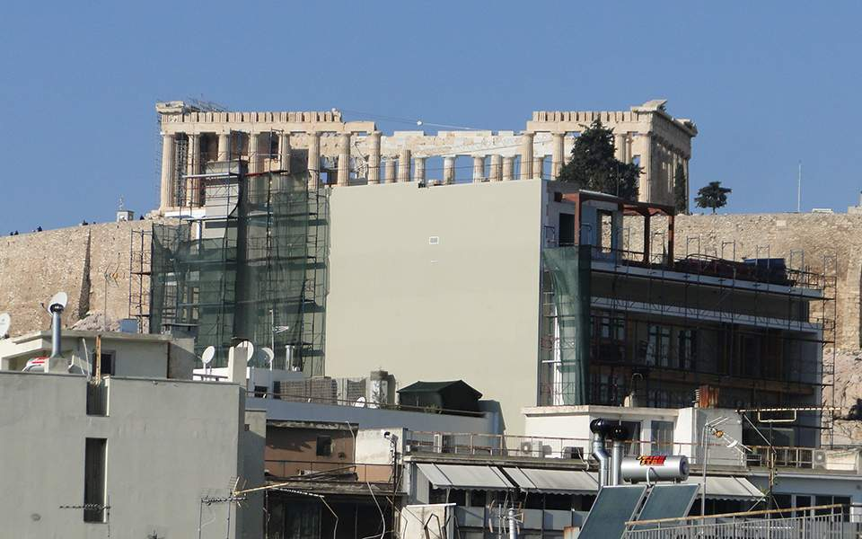

ViewBuilder
Problem

Building blocking Acropolis view
It can be difficult to know how a building is going to impact in the view.
Not only have to take into account the height, but also the relative heights in all directions.
This problem can be easily resolved with a viewshed analysis.
But.. What is a viewshed analysis?
A viewshed is the area visible from a specific location.